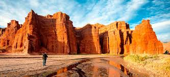
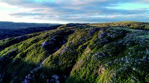
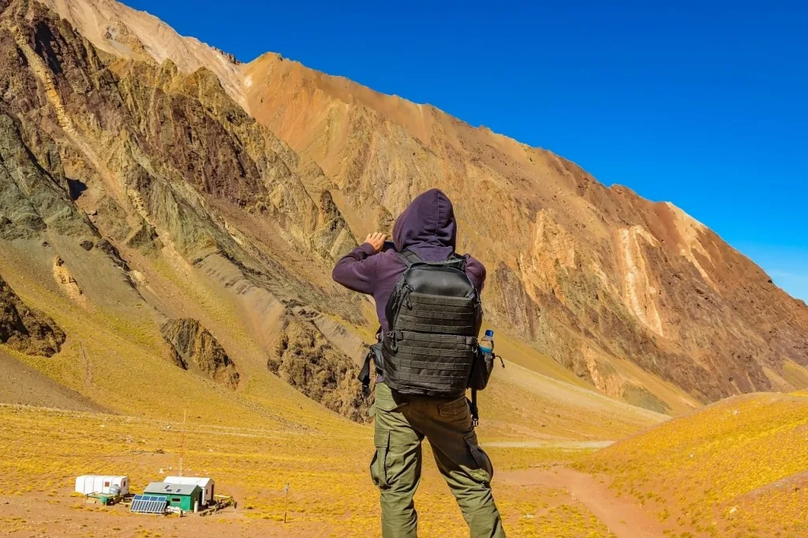

Disfruta de los mejores destinos junto a Golux Arg
El Litoral

Coloreada con una amplia gama de verdes y amarronados, la región del Litoral ocupa apaciblemente el noreste de Argentina, aunando en sí las subdivisiones conocidas como Mesopotamia y Llanura Chaqueña. Natural, variada, caracterizada por sus múltiples cursos de agua y sumamente tranquila, exhibe sus singulares panoramas cautivando una gran afluencia de visitantes.
Norte Argentino
El norte argentino es una región maravillosa del país, llena de contrastes, paisajes, flora, fauna, y un encanto y mística que lo dicen todo. Son tierras poco pobladas, de extensa belleza, llenas de elementos geológicos, y cuya cultura festeja costumbres centenarias.
Buenos Aires
Buenos Aires es una ciudad que siempre está en movimiento. Su faceta cultural se ve reflejada en la gran cantidad y variedad de museos, teatros, galerías artísticas y bibliotecas. Su variada oferta de actividades y alojamientos, contribuyen a que Buenos Aires reciba más de 4 millones de turistas al año y sea una de las ciudades más visitadas de Sudamérica.
Region Centro
Con el cuadro deslumbrante de las montañas siempre presente, cada una de las regiones que se extienden por el territorio cordobés: Traslasierra, el Noroeste, el Norte, las Sierras del Sur, Calamuchita, Punilla, Paravachasca, Sierras Chicas y Mar Chiquita, presentan atractivos y servicios destinados al turismo. Panoramas incomparables y únicos, estas zonas permiten al visitante deleitarse en la posibilidad de elegir el destino que más le guste.
Patagonia

La Patagonia Argentina es un vasto territorio cargado de misterio, generador de un fuerte magnetismo, poseedor de un increíble poder de seducción, capaz de cautivar a todo aquel que se acerque hasta estos parajes y se deje abrazar por la inmensidad de sus horizontes, hasta rendirse ante tan contundente demostración de la insignificancia del ser frente a la sublime majestuosidad de la naturaleza.
Cuyo
La región vinícola de Cuyo incluye algunos de los viñedos más aclamados del mundo. Las variedades de vino malbec y cabernet sauvignon de este país se exportan a todo el mundo, lo que pone a estas ciudades en el mapa. Disfruta tus vacaciones mientras conoces las sutiles diferencias entre los diferentes vinos durante tus visitas a las bodegas de vino famosas.